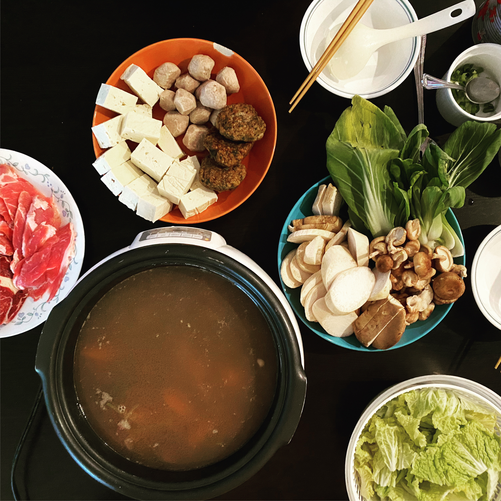

Chinese Hot Pot

Hot Pot is great for when it is cold, or when I am too lazy to cook something.
I just have to make a simple broth, and we cook everything else by the table! Here
are some tips on how to put together a hot pot spread.
Soup
For soup, I will usually just do a carton of chicken broth, boiled with
either daikon radish or carrots. If I want to go fancier, I will make a
Chinese herbal soup for the base.
Here's
where I buy my Chinese herbal mixes, my favorite is the Health & Immunity Mix.
Ingredients
King trumpet mushrooms, sliced
Fish balls, especially the ones filled with roe
Sauce
We make our sauce on the side and dip our food in it. I usually go with a sauce with soy sauce, sliced green onions, and this Chinese barbeque sauce